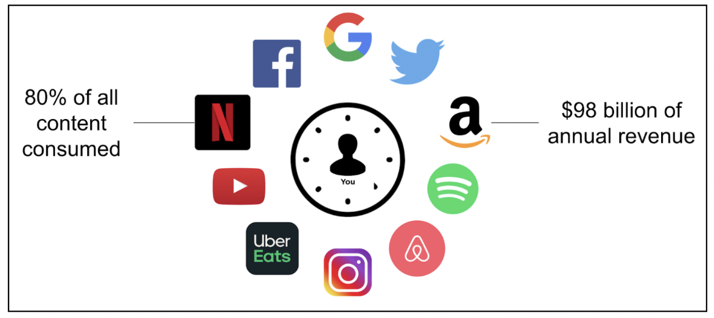

Basic ideas
What recommender systems are, why businesses use them, and how collaborative, content-based, and hybrid methods differ.
CS1102 - Course Project - 2025/2026 Semester B
How Netflix, Amazon, and TikTok decide what you see next.
Hook
When a user opens a shopping or streaming app, the catalog is too large to browse one item at a time. Recommender systems reduce that overload by suggesting a smaller set of useful choices.
For businesses, that means better discovery, higher engagement, and more relevant experiences.
Start LearningWhat you’ll find
Business impact
Recommender systems shape what people watch, buy, and listen to every day. A common estimate is that around 80% of content consumed on major platforms comes through recommendation features.
For businesses, this can translate into major revenue effects, with estimates around 98 billion USD in annual revenue impact across large recommender-driven ecosystems.

Overview
What recommender systems are, why businesses use them, and how collaborative, content-based, and hybrid methods differ.
How candidate generation, scoring, and re-ranking work together when there are millions of users and items.
How large language models fit into recommendation workflows and why privacy, bias, and filter bubbles matter.